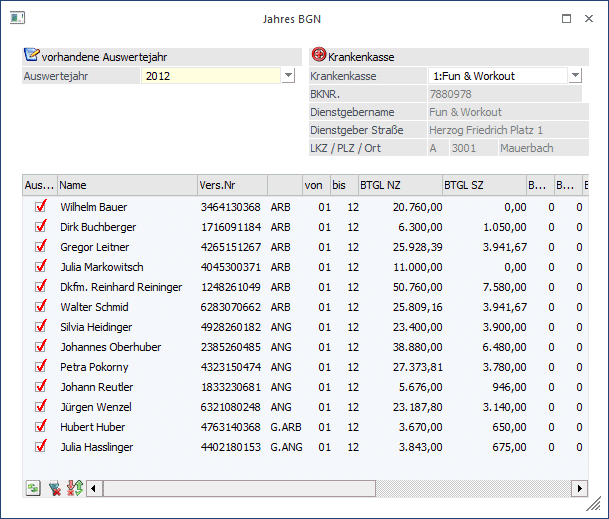
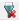
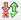
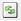

Der Jahresbemessungsgrundlagennachweis ist eine Liste der nach Arbeitnehmern sortierten Sozialversicherungsbeiträge im Jahr.
Der JBGN wird im Programmpunkt
1 Auswertungen
1 Archiv
1 Jahres BGN
aufgerufen.

Hinweis:
Diese Liste wurde bis 2002 benötigt. Ab dem Abrechnungszeitraum 2003 gibt es gemeinsame Meldungen für L16 und JBGN.
Auswertejahr
Aus der Auswahllistbox
Ø Auswertejahr
kann das Abrechnungsjahr ausgewählt werden, für das die Auswertung durchgeführt werden soll. Es werden alle Jahre aufgelistet, für die Abrechnungen vorhanden sind.
Achtung:
Wenn im laufenden Jahr (z.B. 2007) bereits das Nachfolgejahr (2008) zur Auswahl angeboten wird, dann kann das nur von einer Austrittsabrechnung (Ersatzleistung in folgende Monate) stammen.
Ø Krankenkasse
Aus der Auswahllistbox kann dir Betriebsnummer gewählt werden, für den der JBGN gedruckt werden soll. Wurde eine Krankenkasse ausgewählt, werden darunter die entsprechenden Informationen zur Krankenkasse angezeigt.
Durch Anklicken des Anzeigen-Buttons werden in der Tabelle die entsprechenden Datensätze angezeigt, wobei folgende Informationen zur Verfügung stehen:
Ø Ausgabe
Ist die Checkbox aktiv, dann ist der AN für die Ausgabe der Daten vorgemerkt.
Ø Name
Ø Vers.Nr.
Ø Typ
Hier wird angezeigt, um welchen Typ von AN es sich handelt (Arbeiter, Angestellter, geringfügiger ARB oder geringfügiger ANG).
Ø von/bis
Zeitraum, in dem der AN Bezüge bezogen hat.
Ø BTGL NZ
Bemessungsgrundlage Normalzahlungen
Ø BTGL SZ
Bemessungsgrundlagen Sonderzahlungen
Ø BV BTGL
Hier wird die Beitragsgrundlage für die Berechnung des BV-Beitrages angezeigt und kann ggf. verändert werden.
Ø BV Beitrag
Hier wird der BV-Beitrag angezeigt.
Ø TE Tage
Anzahl der Tage mit Teilentgelt. Wurden in den monatlichen Abrechnungen die Anzahl der Tage mit Teilentgelt hinterlegt, wird hier die Anzahl der Tage zusammengezählt.
Ø BTGL TE
Betrag, der als Teilentgelt ausbezahlt wurde. Hier werden alle abgerechneten Lohnarten (Beträge) zusammengefasst, bei denen die Checkbox "Teilentgelt" aktiviert ist. Dabei ist der Zeitpunkt der Aktivierung der Checkbox nicht relevant (kann auch nach der Abrechnung aktiviert werden).
Ø Anspruch SZ
Durch Aktivieren der Checkbox wird definiert, ob der AN Anspruch auf Sonderzahlung hat oder nicht.
Buttons der Tabelle
Ø

Alle-ButtonDurch Anklicken des Alle-Buttons werden alle Einträge in der Tabelle zur Ausgabe markiert.
Ø

Umkehren-ButtonDurch Anklicken des Umkehren-Buttons wird die Selektion "Ausgabe" in das Gegenteil gekehrt: die selektierten AN werden deselektiert und die deselektierten AN werden selektiert.
Ø

Anzeigen-ButtonDurch Anklicken des Anzeigen-Buttons wird die Tabelle anhand der Krankenkasseneinstellung neu gefüllt.
Buttons

Ø Ausgabe
Aus der Auswahllistbox kann gewählt werden, ob die Ausgabe am Bildschirm oder am Drucker durchgeführt werden soll. Standardmäßig wird die Ausgabe auf Bildschirm vorgeschlagen, die auch durch Drücken der F5-Taste gestartet werden kann.
Hinweis:
Der Ausdruck des JBGN erfolgt nach gewissen Kriterien, die formell einzuhalten sind:
Zuerst werden alle Arbeiter und dann alle Angestellten gedruckt, wobei die AN jeweils nach Namen sortiert werden. Nach einem Seitenumbruch werden dann alle geringfügigen Arbeiter und dann die geringfügigen Angestellten gedruckt, ebenfalls wieder nach Namen sortiert.